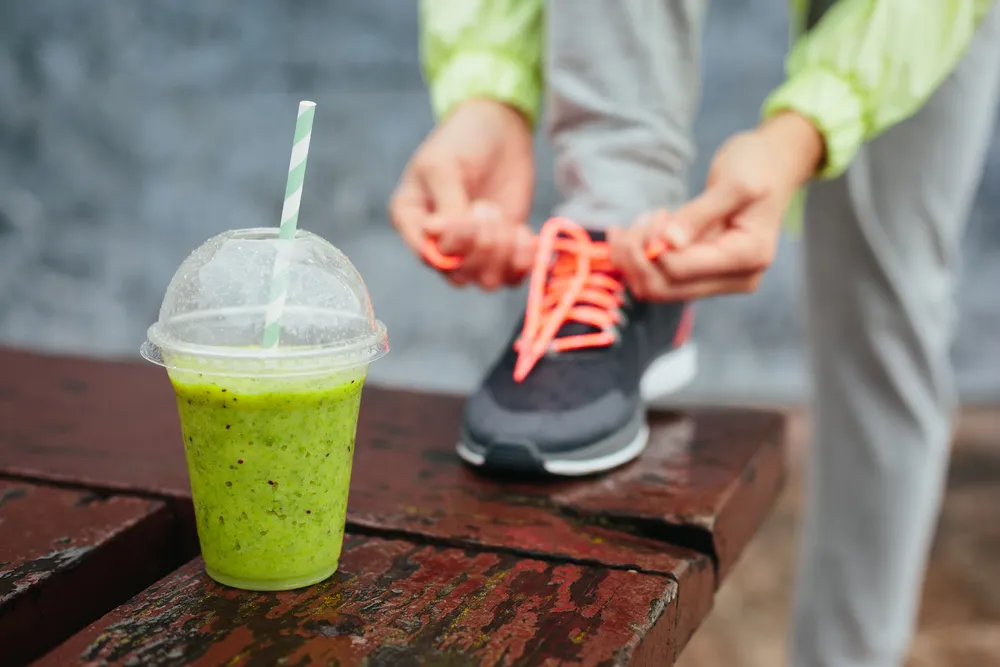

What to Eat Before a Run

Whether you’re running a marathon or going on a quick sprint around the block, it’s important to fuel your body with the right foods. Nourishing your body with the proper nutrition will help you stay energized, prevent injuries and push yourself to new limits. That being said, certain foods are more helpful for exercise than others.
In this article, we’ll take a closer look at when and what to eat before a run , the types of foods you should include in your pre-workout meal as well as a few foods you should avoid. Before heading out on your next run, here’s what you should know!
How Soon Should You Eat Before a Run?
Running on an empty stomach is a bad idea. On the other hand, consuming a full meal right before putting on your running shoes is also a bad idea. So, when exactly should you eat before a run?
According to Verywell Fit , you should not feel starved or stuffed when starting a run. An empty stomach could leave you fatigued and a full stomach can lead to cramping. There are multiple studies with differing opinions on how soon you should eat before exercise but on average you should eat a light meal about 1.5 to 2 hours before running or a small snack about 30 minutes to an hour before running.
If running becomes a regular part of your routine, you’ll get to know your body and find a timing schedule that works for you.
Carbohydrates Are Key
Runners need carbohydrates to gain energy for cardio exercises like running. According to Cleveland Clinic , the glycogen found in carbs is stored in your muscles and helps them to perform.
You will feel fatigued, sluggish, and probably not very motivated while running without having carbs in your system. Thankfully, there are plenty of foods that can give you a healthy intake of carbohydrates. Some of them include:
- Whole grains
- Bread
- Pasta
- Gluten-free grains (like rice, quinoa, and corn)
- Milk
- Legumes
- Starchy vegetables (like sweet potatoes, butternut squash, and peas)
Protein Gives You Energy
Another crucial nutrient to include in your daily meals is protein . It plays a major role in building and repairing bones, muscles, and cartilage. Runners need protein to help the body recover from physical activity and to build muscle, which improves overall performance.
Protein is equally important to consume after a workout. The body uses protein to recover, so make sure to include protein when you’re refueling with food after a run.
Good Sources of Protein
There are plenty of great sources of protein to choose from. This includes animal protein like meat and fish, eggs, and protein bars.
There are also plenty of plant-based options available too. This includes chickpeas, quinoa, fruit smoothies, lentils, and nuts. Enjoy these foods before and after your run to stay energized and for recovery!
Vitamins and Minerals
Runners need to make sure they’re eating foods that provide calcium , iron, and sodium. All of these nutrients and minerals help the body to function in different ways.
For starters, calcium can help prevent osteoporosis and stress fractures. Next, iron is a nutrient that prevents fatigue or weakness when you run. Finally, you lose tons of sodium and other electrolytes when sweating through exercise. You will need to replenish the body’s supply through your diet.
Foods Rich in Vitamins and Minerals
There are many foods rich in these essential vitamins and minerals. Runners should include these foods in their meals before running :
- Dark and leafy vegetables
- Beans
- Eggs
- Low-fat dairy products
- Calcium-fortified juices
- Lean meats and seafood
- Nuts
- Sports drinks
- Pretzels and other salty snacks
Don’t Forget About Water
Perhaps the most important thing to fuel your body with as a runner is water . It helps with everything from regulating body temperature to minimizing injury to maximizing performance and more!
Humans generate 20 times more heat while running than we do when resting. While sweating helps cool our bodies down, this function also leads to a loss of water and electrolytes. Prevent dehydration by drinking water before, during, and after a run.
To make your water intake more interesting, try flavoring your water with sugar-free drops. Fruits such as melons, pineapple, strawberries, and oranges are also excellent sources of water.
Foods to Avoid Before a Run
While there are plenty of foods that can help you as an athlete, there are also certain foods you’re better off avoiding.
Healthline recommends avoiding foods that are high in fat and fiber before running. This is because they can take longer to digest, which isn’t ideal when you’re planning to be active. Instead, focus on foods that are high in carbs and moderate in protein. Here are some examples of foods to avoid in a pre-run meal:
- Heavy sauces and creams
- Fried foods
- Foods prepared with too much butter or oil
- Whole grains high in fiber
Nourish Your Body After Going on a Run
Like all exercises, running is an intensive movement that depletes your body of essential vitamins and nutrients. That’s why it’s super important to properly fuel your body before and after a run. Thankfully there are plenty of great foods to eat before and after running that will help you hit your goals!
Source: https://activebeat.com/diet-nutrition/foods-to-eat-before-running/